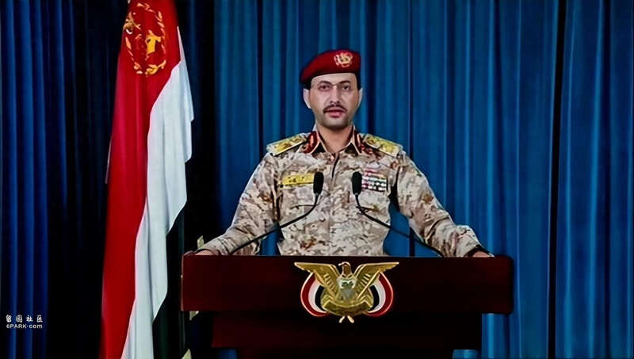

△也门胡塞武装发言人叶海亚·萨雷亚（资料图）
也门胡塞武装发言人叶海亚·萨雷亚4日说，该组织在也门北部萨达省再次击落一架美军MQ-9“死神”无人机。
萨雷亚当天发表声明说，胡塞武装防空部队使用“自制地对空导弹”击落这架无人机，它当时正在执行针对胡塞武装的“敌对行动”。萨雷亚未透露击落无人机的具体时间，但宣称这是该组织自去年10月以来第七次击落该型无人机。
美国军方暂未就此表态。MQ-9属于察打一体无人机，既可执行侦察监视任务，也可挂载导弹打击地面目标。
萨雷亚在声明中还说，胡塞武装用数枚导弹在亚丁湾袭击了一艘名为“格罗顿”的货轮。他未透露袭击船只的具体时间，但表示“格罗顿”号货轮所属公司旗下有船只停靠以色列港口，因此胡塞武装对其发动袭击。
另据英国海上贸易行动办公室和多家媒体3日报道，“格罗顿”号当天在也门附近亚丁湾两次遭袭击，没有人员伤亡。
去年10月新一轮巴以冲突爆发后，胡塞武装使用无人机和导弹袭击红海和亚丁湾水域目标，要求以色列停止在巴勒斯坦加沙地带的军事行动。今年1月12日以来，美国和英国多次对胡塞武装目标发动空袭，造成人员伤亡。一些国家谴责美英两国的行动，认为这是对也门主权的侵犯，会加剧地区紧张局势。
来源：央视新闻
Advertisements